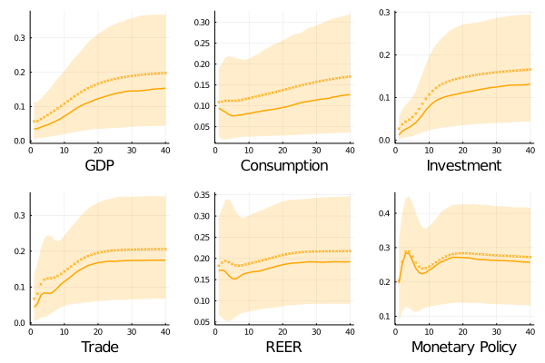
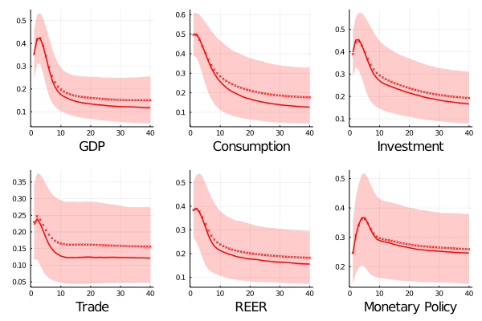
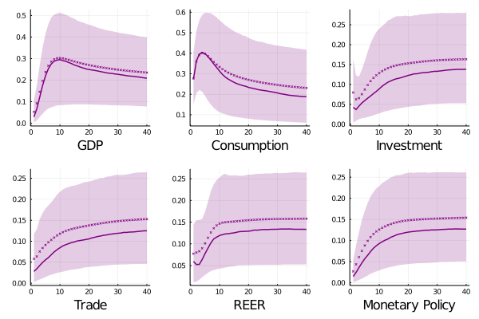
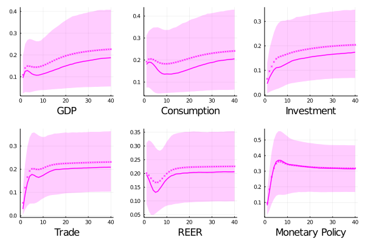

Global shocks ....
 Both, output and investment are explained in small portion by fundamental shocks in the short run with an increasing path until achieve a participation around 13 percent for the later and 15 for the former. The explanation power on consumption has not presented a remarkable variability being in the range [7-13] percent. In contraposition, the effect on financial related variables - effective real exchange rate, and monetary policy interest rate looks to appears more promptly, with an instantaneous contribution of 17 and 19 percent, respectively. After 40 quarters they are stabilized around 20, and 25 percent becoming them into the variable with a highest response in this economy.
This is only for visual purposesThis is only for visual purposesThis is only for visual purposes This is only for visual purposesThis is only for visual purposesThis is only for visual purposes This is only for visual purposesThis is only for visual purposesThis is only for visual purposes This is only for visual purposesThis is only for visual purposesThis is only for visual purposes This is only for visual purposesThis is only for visual purposesThis is only for visual purposes
 During the first two years, global shocks has more effect over consumption rather than investment and total output, with an explanation power that comes from 50 to 28 percent. In the same period, the effect on the GDP variability starts close to 35 percent (40 percent for investment) to finish around 18 percent (and 29 on investment). In the long run, investment on Canada is the most explained real variable among the selected ones, with an exposure of 16 percent (12-13 for output and consumption). These results contrast drastically respect the rest of countries belong to this group. For this economy the absorption of future information occurs in the two first quarters - reflecting in the sharp hump of their FEV paths.
On the other hand, the volatility of interest rates explicated by fundamental (global) shocks exhibits a similar pattern with an initial value of 24 percent, a maximum of 37 percent after one year decreasing until one quarter of the total variability. The Canadian's exchange rate displays the highest uncovering amid selected developed countries.

In the long run, we can recognize two clusters in Norway variables. On one side, the output and consumption shows that 20 percent of their fluctuations are described by global innovations; on the other side, global shocks just explain 13 percent of the rest of variables. A second difference resides in the shape that the contribution of global innovations exposes. This is only for visual purposesThis is only for visual purposesThis is only for visual purposes
This is only for visual purposesThis is only for visual purposesThis is only for visual purposes This is only for visual purposesThis is only for visual purposesThis is only for visual purposes This is only for visual purposesThis is only for visual purposesThis is only for visual purposes This is only for visual purposesThis is only for visual purposesThis is only for visual purposes This is only for visual purposesThis is only for visual purposesThis is only for visual purposes

This is only for visual purposesThis is only for visual purposesThis is only for visual purposes This is only for visual purposesThis is only for visual purposesThis is only for visual purposes This is only for visual purposesThis is only for visual purposesThis is only for visual purposes This is only for visual purposesThis is only for visual purposesThis is only for visual purposes This is only for visual purposesThis is only for visual purposesThis is only for visual purposes
This is only for visual purposesThis is only for visual purposesThis is only for visual purposes This is only for visual purposesThis is only for visual purposesThis is only for visual purposes This is only for visual purposesThis is only for visual purposesThis is only for visual purposes This is only for visual purposesThis is only for visual purposesThis is only for visual purposes This is only for visual purposesThis is only for visual purposesThis is only for visual purposes
Global shocks ....
If you have any doubt, suggestions, or simply want to talk, you can contact with me.